La radiazione e le onde elettromagnetiche
Campi elettrici e campi magnetici variabili
Legge di faraday
\[ \frac{d \Phi_{B}}{dt} \Rightarrow \vec{E} \]
Legge di ampere estesa
\[ \frac{d \Phi_{E}}{dt} \Rightarrow \vec{B} \]
Onde elettromagnetiche: 1

\[ \begin{cases} \vec{E} = \vec{E}_{m} \, sin(k x - \omega t) \\ \vec{B} = \vec{B}_{m} \, sin(k x - \omega t) \end{cases} \]
\[ \begin{cases} \vec{E}_{m} \cdot \vec{B}_{m} = 0 \Rightarrow \vec{E}_{m} \, \bot \, \vec{B}_{m} \\ \vec{u}_{x} \cdot \vec{E}_{m} = 0 \Rightarrow \vec{u}_{x} \, \bot \, \vec{E}_{m} \\ \vec{u}_{x} \cdot \vec{B}_{m} = 0 \Rightarrow \vec{u}_{x} \, \bot \, \vec{B}_{m} \end{cases} \]
Onde elettromagnetiche: 2
\[ c = \frac{\omega}{k} = velocità \, della \, luce \]
\[ c = \frac{1}{\sqrt{\varepsilon_{0} \mu_{0}}} \approx 3 \cdot 10^{8} \, m/s \]
\[ c = \frac{E_{m}}{B_{m}} \]
La velocità della luce
Lo spettro elettromagnetico
Intensità di un'onda elettromagnetica
Il vettore di Poynting
\[ \vec{S} = \frac{1}{\mu_{0}} \vec{E} \times \vec{B} \]
\[ I_{ist} = S = \frac{1}{\mu_{0}} E B = \frac{1}{c \mu_{0}} E^{2} \]
\[ I = S_{avg} = \frac{1}{2 c \mu_{0}} E^{2}_{m} \]
Polarizzazione della luce: 1
Polarizzazione lineare
Polarizzazione verticale
\( \vec{E}_{y}sin(k x - \omega t) \)
Polarizzazione orizzontale
\( \vec{E}_{x}sin(k x - \omega t) \)
Polarizzazione della luce: 2
Polarizzazione circolare
Polarizzazione destra
\( \vec{E}_{y}sin(k x - \omega t) + \vec{E}_{x}cos(k x - \omega t) \)
Polarizzazione sinistra
\( \vec{E}_{y}sin(k x - \omega t) - \vec{E}_{x}cos(k x - \omega t) \)
Polarizzazione della luce: 3
Un esempio pratico di polarizzazione
Principio di Huygens
Principio di Huygens e la diffrazione
Interferenza tra onde elettromagnetiche
\[ \begin{cases} \Delta L = d \, sin(\theta) \\ d \, sin(\theta) = m \lambda \Rightarrow \, massimi \\ d \, sin(\theta) = (m + \frac{1}{2}) \lambda \Rightarrow \, minimi \end{cases} \]
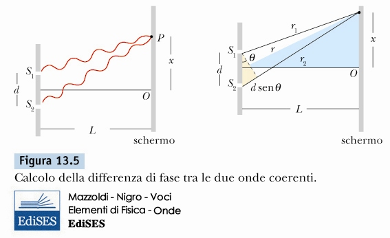Diffrazione di raggi x
\( 2 \, d \, sin(\theta) = m \, \lambda \)
Diffrazione di raggi x
Diffrazione da singolo cristallo
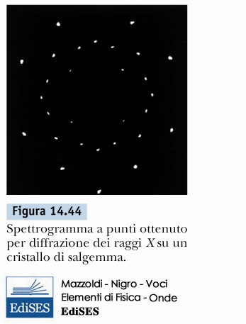Diffrazione da polveri
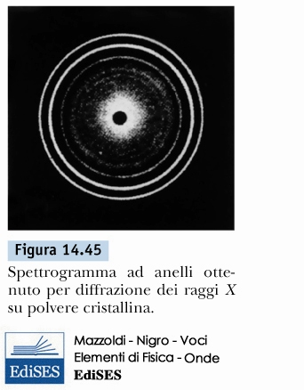Diffrazione di raggi x
Un esempio reale legato alla conservazione dei beni culturali
riferito alla corrosione di vetrate medievali
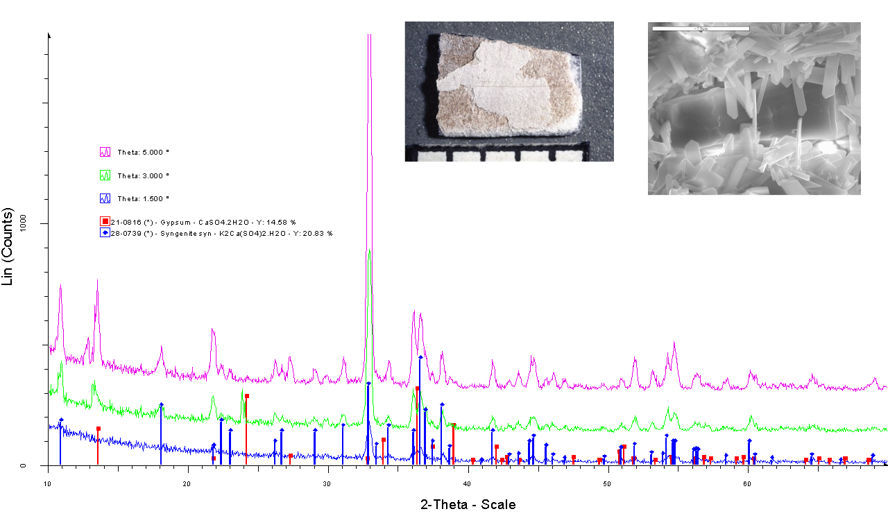Velocità della luce in un mezzo materiale
\( c \Rightarrow Velocit \grave{a} \, nel \, vuoto \)
\( v \Rightarrow Velocit\grave{a} \, nel \, mezzo \)
\( \boxed{ n = \frac{c}{v} \, indice \, di \, rifrazione }\)
\( \boxed{ \lambda_{n} = \frac{\lambda_{0}}{n} }\)
Riflessione e rifrazione della luce
Legge di riflessione
\( \theta_{i} = \theta_{r} \)
Legge di snell
\[ \begin{cases} \theta_{1} = \theta_{i} \\ \theta_{2} = \theta_{t} \\ n_{1} \, sin(\theta_{1}) = n_{2} \, sin(\theta_{2}) \end{cases} \]
Legge di Snell: dall'aria al vetro
\( n_{1} < n_{2} \)
\( \Downarrow \)
\( \theta_{1} > \theta_{2} \)
Legge di Snell: dal vetro all'aria
\( n_{1} > n_{2} \)
\( \Downarrow \)
\( \theta_{1} < \theta_{2} \)
Riflessione interna totale
Angolo Critico
\( sin(\theta_{0}) < \frac{n_{2}}{n_{1}} \)
Fibre ottiche e riflessione interna totale
Dispersione della luce
 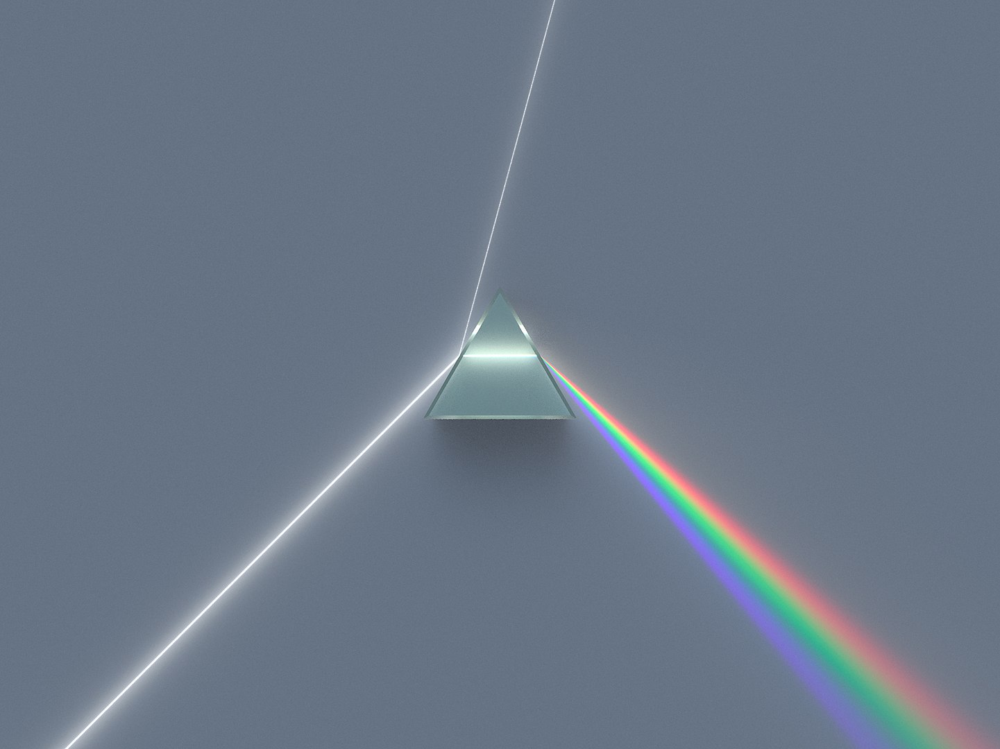
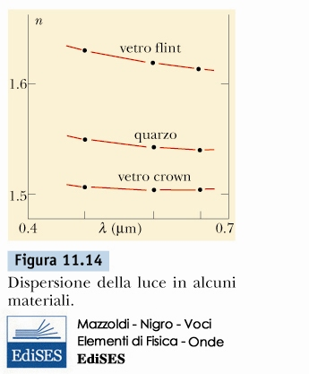
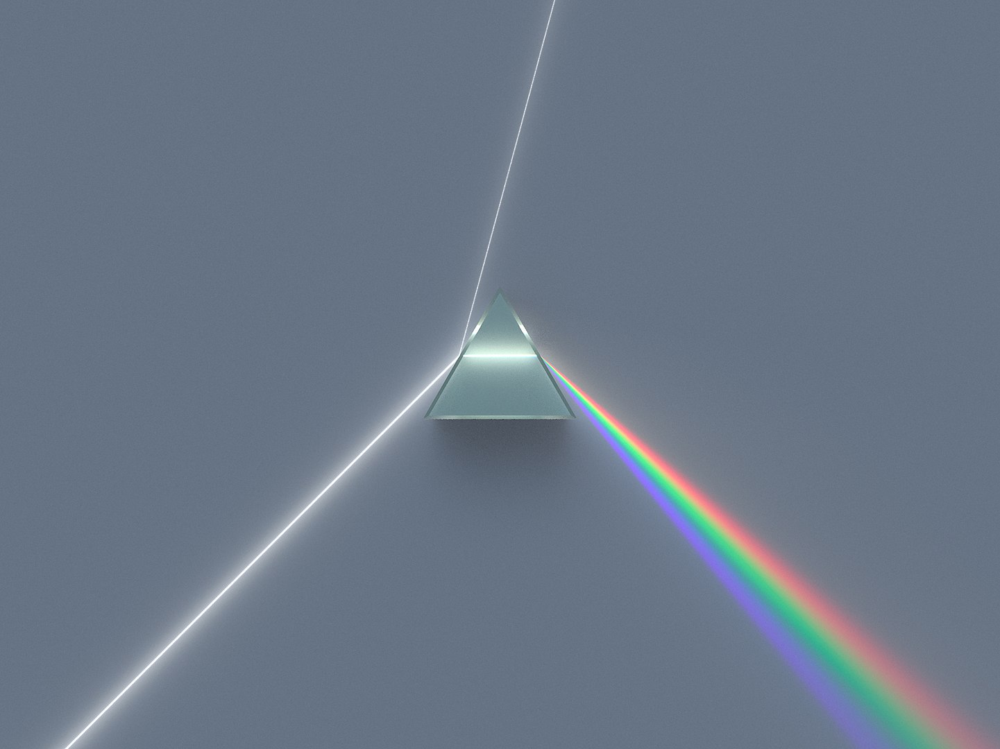
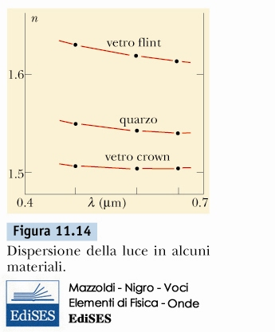
Legge di snell
\[ n_{1,\lambda} \, sin(\theta_{1,\lambda}) = n_{2,\lambda} \, sin(\theta_{2,\lambda})\]
La rifrazione e la luce come onda
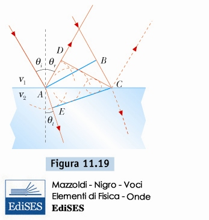Diffrazione da singola fenditura
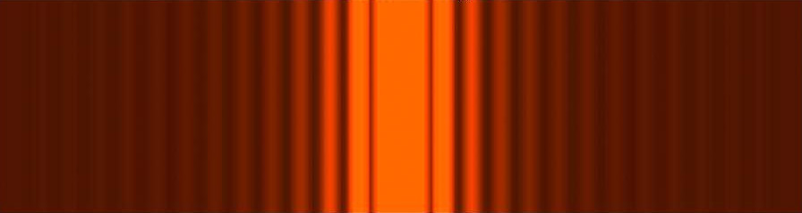Posizione del primo minimo d'intensità
\[ \frac{d}{2}sin(\theta) =\frac{\lambda}{2} \]
Posizione dei minimi d'intensità
\[ d \, sin(\theta) = m \, \lambda \]
Intensità della diffrazione di singola fenditura
\[ \begin{cases} I(\theta) = I_{m} \left( \frac{sin(\alpha)}{\alpha} \right)^{2} \\ \alpha = \frac{\pi d}{\lambda}sin(\theta) \end{cases} \]
Diffrazione e risoluzione di un microscopio

"La risoluzione di un microscopio è proporzionale alla lunghezza d'onda della luce utilizzata."
\[ r \propto \lambda \]
La luce come particella: i fotoni
Energia di un fotone
\( E_{f} = h \, f \)
\( E_{\omega} = \hbar \, \omega \)
Costante di Planck
\( h = 6.626 \cdot 10^{-34} [J \cdot s] \)
\[ \hbar = \frac{h}{2 \pi} = 1.054 \cdot 10^{-34} [J \cdot s] \]
Diffrazione da singola fenditura con fotoni singoli
Interazione tra fotoni e materia: assorbimento e fluorescenza
\[ E_{finale} - E_{iniziale} = h \, f \]
\[ 1 \, eV = 1.602176634 \cdot 10^{-19} \, J \]
Un esempio di fluorescenza a raggi X

\[ E_{Si} \approx 1.80 \, KeV \]
\[ E_{S} \approx 2.48 \, KeV \]
\[ E_{Mn} \approx 5.89 \, KeV \]
\[ E_{Fe} \approx 6.40 \, KeV \]
Ritratto di dama e i raggi x
Dipinto
Mappa raggi x: \( Cu \)
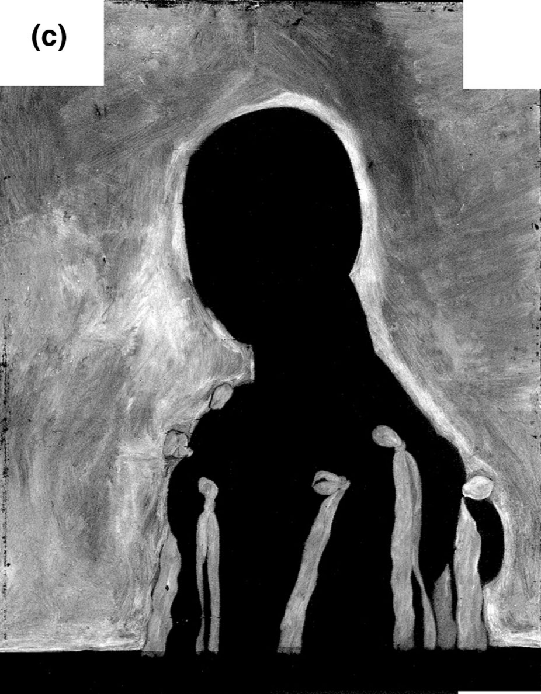Mappa raggi x: \( Fe \)
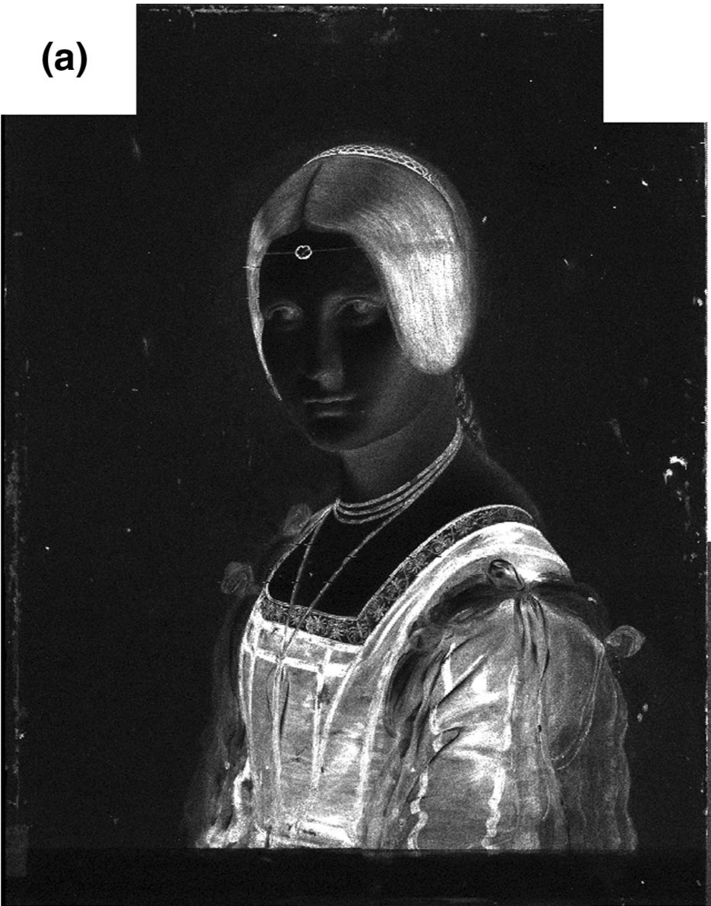Dualità onda particella
Luce e materia possono manifestarsi come onda o come particella, a seconda del tipo di strumento utilizzato per l'osservazione.
\[ \lambda_{elettrone} \approx \lambda_{raggi-x} \]
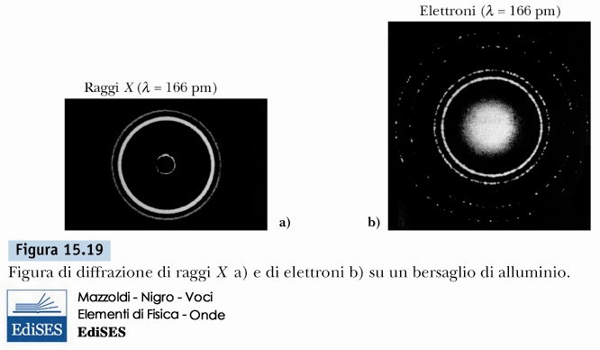Dualità onda particella
Il microscopio elettronico
\[ \lambda_{elettrone} \ll \lambda_{visibile} \]
Fluorescenza x generata da elettroni
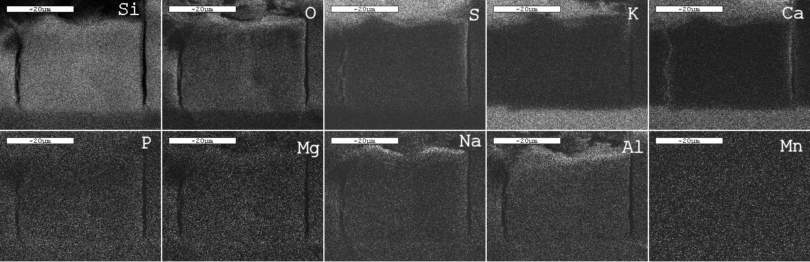Appelli d'esame
- 23/06/2021 - Ore 10.00
- 24/06/2021 - Ore 10.00
- 16/07/2021 - Ore 10.00
- 15/09/2021 - Ore 10.00
Modalità d'esame
Esame orale, scegliendo un tema da approfondire legato a problemi inerenti il corso in Restauro
Prossimo ricevimento
- Giovedì 27 maggio dalle ore 14.00 alle ore 16.00